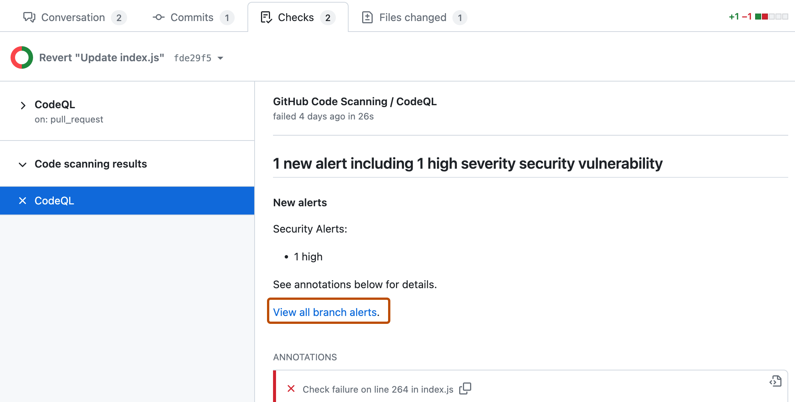
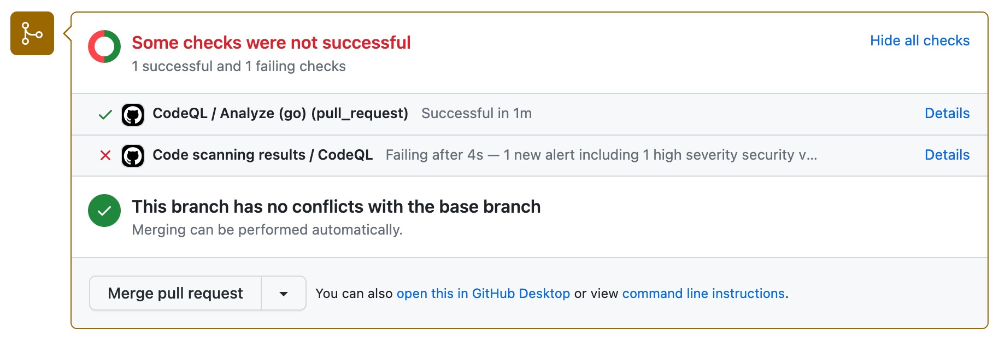
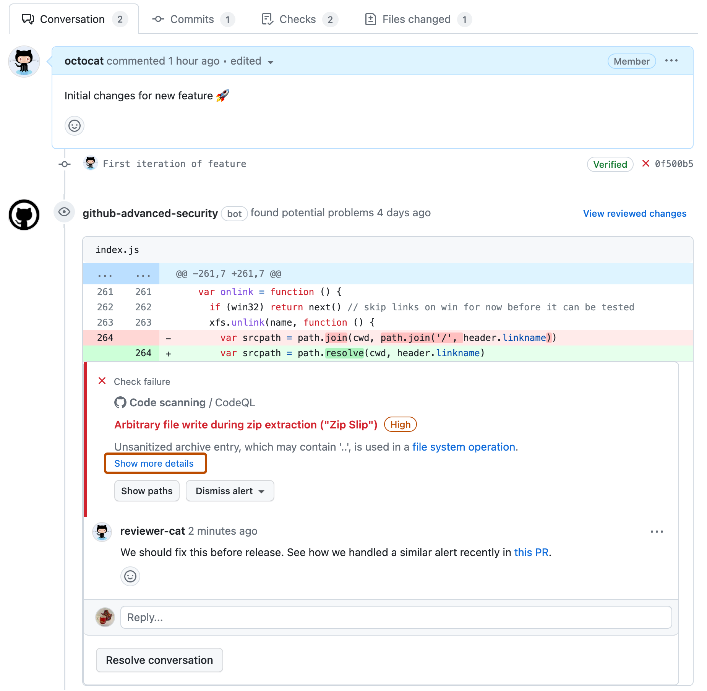
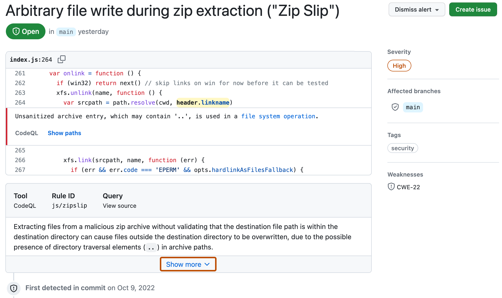
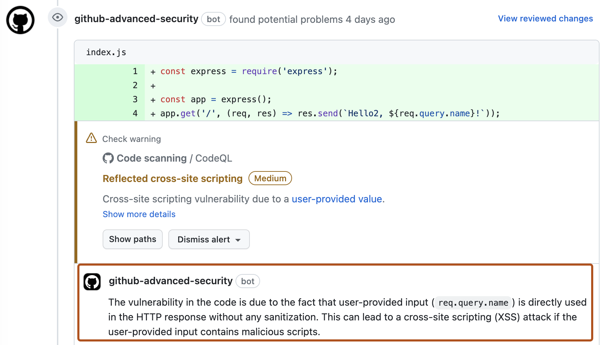
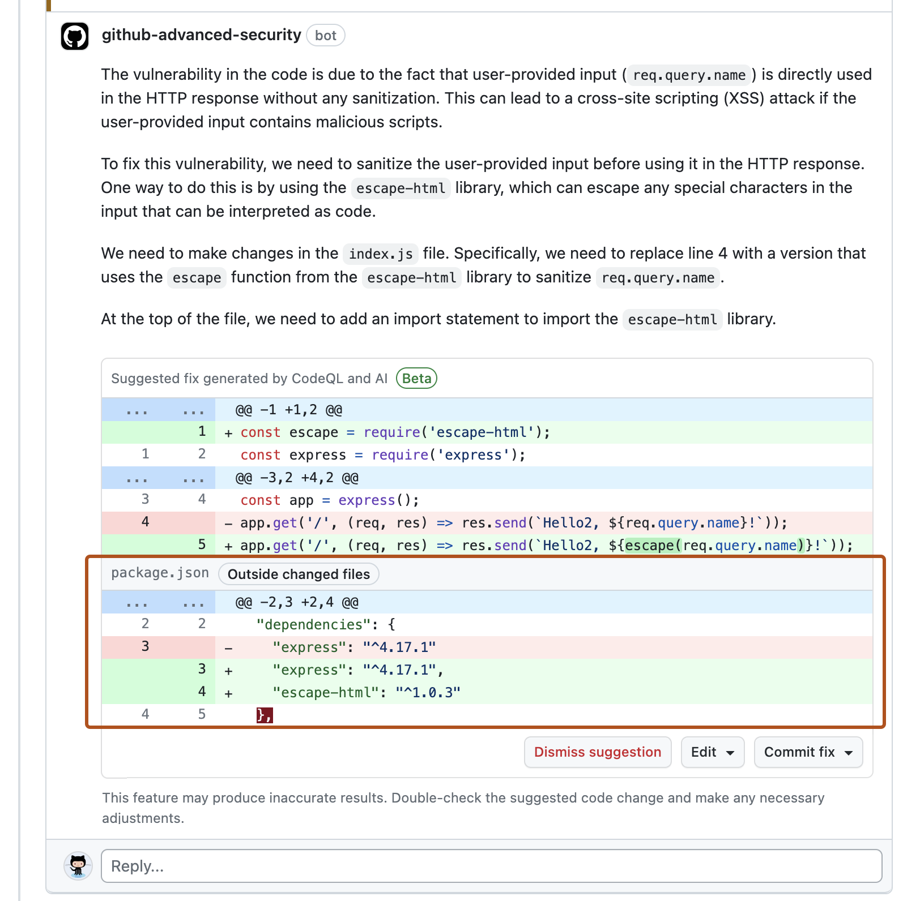
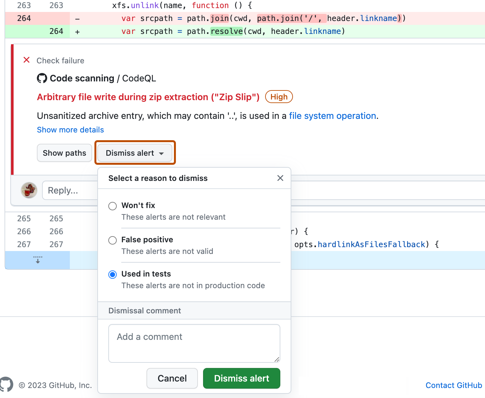

When code scanning identifies a problem in a pull request, you can review the highlighted code and resolve the alert.
Depending on your configuration, code scanning results may appear as check results and annotations on pull requests. For more information, see About code scanning alerts.
For all configurations of code scanning, the check that contains the results of code scanning is: Code scanning results. The results for each analysis tool used are shown separately. Any new alerts on lines of code changed in the pull request are shown as annotations.
To see the full set of alerts for the analyzed branch, click View all branch alerts. This opens the full alert view where you can filter all the alerts on the branch by type, severity, tag, etc. For more information, see Assessing code scanning alerts for your repository.

If the code scanning results check finds any problems with a severity of error, critical, or high, the check fails and the error is reported in the check results. If all the results found by code scanning have lower severities, the alerts are treated as warnings or notes and the check succeeds.

You can override the default behavior in your repository settings, by specifying the level of severities and security severities that will cause a pull request check failure. For more information, see Workflow configuration options for code scanning.
Depending on your configuration, you may see additional checks running on pull requests with code scanning configured. These are usually workflows that analyze the code or that upload code scanning results. These checks are useful for troubleshooting when there are problems with the analysis.
For example, if the repository uses the CodeQL analysis workflow a CodeQL / Analyze (LANGUAGE) check is run for each language before the results check runs. The analysis check may fail if there are configuration problems, or if the pull request breaks the build for a language that the analysis compiles (for example, C/C++, C#, Go, Java, Kotlin, Rust, and Swift).
As with other pull request checks, you can see full details of the check failure on the Checks tab. For more information about configuring and troubleshooting, see Workflow configuration options for code scanning or Troubleshooting code scanning analysis errors.
You can see any code scanning alerts that are inside the diff of the changes introduced in a pull request by viewing the Conversation tab. Code scanning posts a pull request review that shows each alert as an annotation on the lines of code that triggered the alert. You can comment on the alerts, dismiss the alerts, and view paths for the alerts, directly from the annotations. You can view the full details of an alert by clicking the "Show more details" link, which will take you to the alert details page.

You can also view all code scanning alerts that are inside the diff of the changes introduced in the pull request in the Files changed tab.
If you add a new code scanning configuration in your pull request, you will see a comment on your pull request directing you to the Security and quality tab of the repository so you can view all the alerts on the pull request branch. For more information about viewing the alerts for a repository, see Assessing code scanning alerts for your repository.
If you have write permission for the repository, some annotations contain links with extra context for the alert. In the example above, from CodeQL analysis, you can click user-provided value to see where the untrusted data enters the data flow (this is referred to as the source). In this case you can also view the full path from the source to the code that uses the data (the sink) by clicking Show paths. This makes it easy to check whether the data is untrusted or if the analysis failed to recognize a data sanitization step between the source and the sink. For information about analyzing data flow using CodeQL, see About data flow analysis.
To see more information about an alert, users with write permission can click the Show more details link shown in the annotation. This allows you to see all of the context and metadata provided by the tool in an alert view. In the example below, you can see tags showing the severity, type, and relevant common weakness enumerations (CWEs) for the problem. The view also shows which commit introduced the problem.
The status and details on the alert page only reflect the state of the alert on the default branch of the repository, even if the alert exists in other branches. You can see the status of the alert on non-default branches in the Affected branches section on the right-hand side of the alert page. If an alert doesn't exist in the default branch, the status of the alert will display as "in pull request" or "in branch" and will be colored grey. The Development section shows linked branches and pull requests that will fix the alert.
In the detailed view for an alert, some code scanning tools, like CodeQL analysis, also include a description of the problem and a Show more link for guidance on how to fix your code.

You can comment on any code scanning alert that appears in a pull request. Alerts appear as annotations in the Conversation tab of a pull request, as part of a pull request review, and also are shown in the Files changed tab.
You can choose to require all conversations in a pull request, including those on code scanning alerts, to be resolved before a pull request can be merged. For more information, see About protected branches.
To track remediation work in your team's workflow without leaving GitHub, you can link alerts to issues. See Linking code scanning alerts to GitHub issues.
Anyone with push access to a pull request can fix a code scanning alert that's identified on that pull request. If you commit changes to the pull request this triggers a new run of the pull request checks. If your changes fix the problem, the alert is closed and the annotation removed.
GitHub Copilot Autofix is an expansion of code scanning that provides you with targeted recommendations to help you fix code scanning alerts (including CodeQL alerts) in pull requests. The potential fixes are generated automatically by large language models (LLMs) using data from the codebase, the pull request, and from code scanning analysis.
Note
You do not need a subscription to GitHub Copilot to use GitHub Copilot Autofix. Copilot Autofix is available to all public repositories on GitHub.com, as well as internal or private repositories owned by organizations and enterprises that have a license for GitHub Code Security.

When Copilot Autofix is enabled for a repository, alerts are displayed in pull requests as normal and information from any alerts found by code scanning is automatically sent to the LLM for processing. When LLM analysis is complete, any results are published as comments on relevant alerts. For more information, see Responsible use of Copilot Autofix for code scanning.
Note
Usually, when you suggest changes to a pull request, your comment contains changes for a single file that is changed in the pull request. The following screenshot shows an Copilot Autofix comment that suggests changes to the index.js file where the alert is displayed. Since the potential fix requires a new dependency on escape-html, the comment also suggests adding this dependency to the package.json file, even though the original pull request makes no changes to this file.

Each Copilot Autofix suggestion demonstrates a potential solution for a code scanning alert in your codebase. You must assess the suggested changes to determine whether they are a good solution for your codebase and to ensure that they maintain the intended behavior. For information about the limitations of Copilot Autofix suggestions, see Limitations of suggestions and Mitigating the limitations of suggestions in "Responsible use of Copilot Autofix for code scanning."
If you decide to reject a Copilot Autofix suggestion, click Dismiss suggestion in the comment to dismiss the suggested fix.
An alternative way of closing an alert is to dismiss it. You can dismiss an alert if you don't think it needs to be fixed. For example, an error in code that's used only for testing, or when the effort of fixing the error is greater than the potential benefit of improving the code. If you have write permission for the repository, a Dismiss alert button is available in code annotations and in the alerts summary. When you click Dismiss alert you will be prompted to choose a reason for closing the alert.

It's important to choose the appropriate reason from the drop-down menu as this may affect whether a query continues to be included in future analysis. Optionally, you can comment on a dismissal to record the context of an alert dismissal. The dismissal comment is added to the alert timeline and can be used as justification during auditing and reporting. You can retrieve or set a comment by using the code scanning REST API. The comment is contained in dismissed_comment for the alerts/{alert_number} endpoint. For more information, see REST API endpoints for code scanning.
If you dismiss a CodeQL alert as a false positive result, for example because the code uses a sanitization library that isn't supported, consider contributing to the CodeQL repository and improving the analysis. For more information about CodeQL, see Contributing to CodeQL.
For more information about dismissing alerts, see Resolving code scanning alerts.